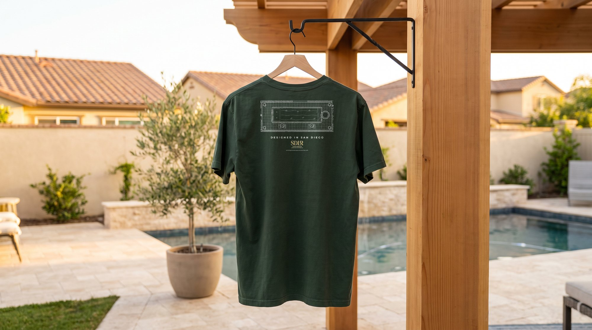
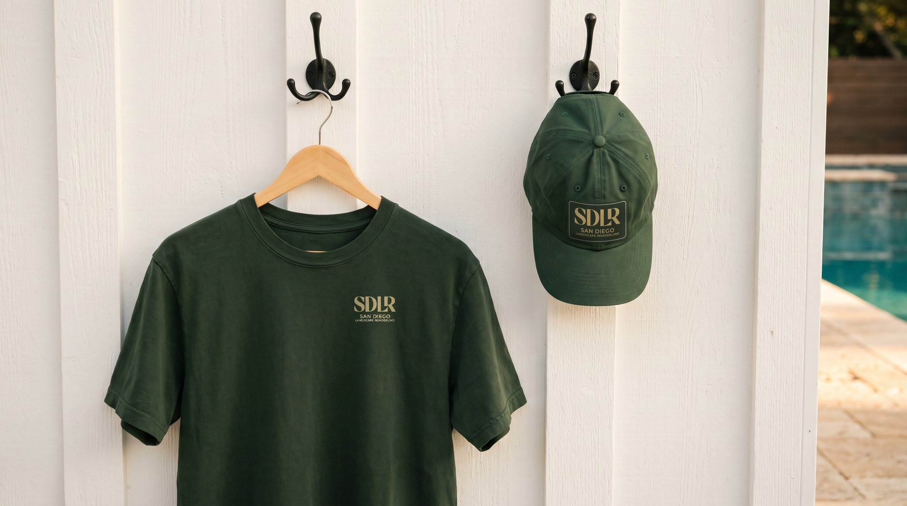
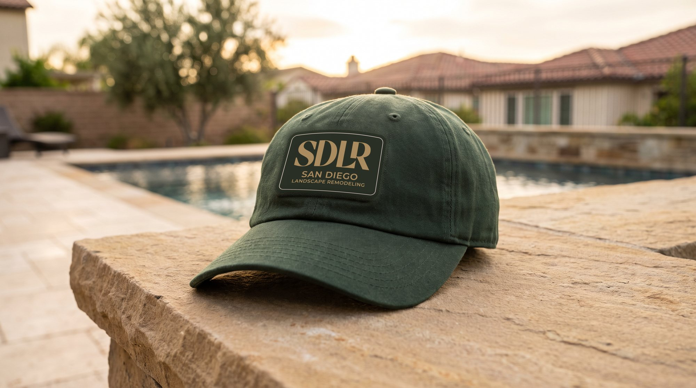
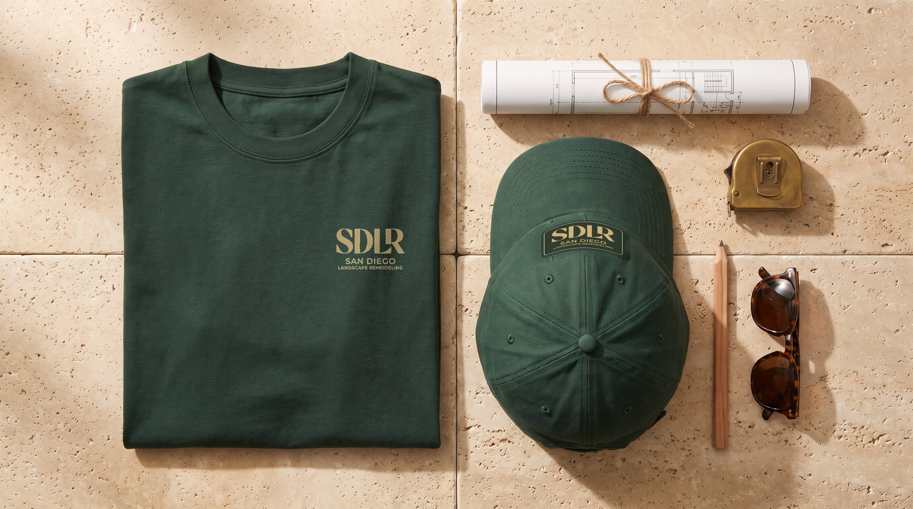

San Diego Landscape Remodeling · Uniform · Version 1
One tee and one cap, for estimates, the crew and the weekend
A Forest heavyweight tee and a matching cap, both carrying the full SDLR logo. They look tidy across the table at an estimate, hold up on a job site, and are casual enough that friends will wear them to the beach.
WaitingSay go, or tell us what to change. Nothing has been ordered.

The back. Our pen-and-ink pool-deck plan, Designed in San Diego, the gold SDLR logo and the website. It reads as art to friends and tells strangers what we do.

The front and the cap. The full SDLR logo on the left chest, 3 in wide, in gold. The cap carries the same logo on a woven patch.

The cap. A 3 × 2 in woven patch with a laser-cut edge: Forest ground, gold logo and a thin cream rule.

The estimate kit.
What's on each piece
Piece
Artwork
Size
Colour
Tee, front
Full SDLR logo, left chest
3 in wide
Gold ink
Tee, back
Pool-deck plan, Designed in San Diego, SDLR logo, sandiegolandscaperemodeling.com
12 in wide (11 in for size S)
Cream plan and words, gold logo
Cap, front
Woven patch with the full SDLR logo
3 × 2 in
Forest ground, gold logo, cream rule
Why it's built this way
No phone number. A phone number turns it into a work shirt and friends stop wearing it. The logo and the website are enough for anyone to find us.
A woven patch, not embroidery. At hat size, the LANDSCAPE REMODELING line is about 2.7 mm tall, too fine to stitch cleanly. A woven patch keeps it sharp.
Gold on Forest. These are the brand print colours: Forest #2E382B, Gold #BDA572 and Cream #F5F1E8.
The layered Illustrator file, the mockups and the README are in Drive: 02 Clients/san-diego-landscape-remodeling/assets/print-ready/apparel/2026-11-23-uniform-tee-cap-v1/.